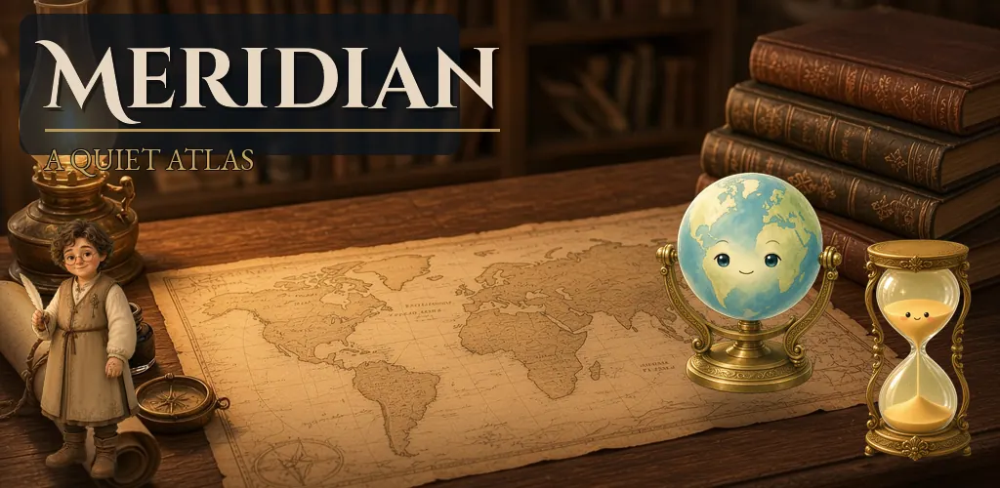
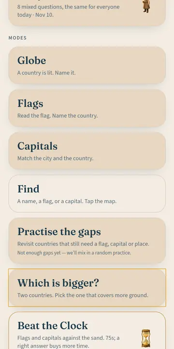
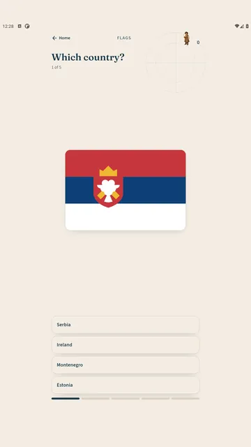
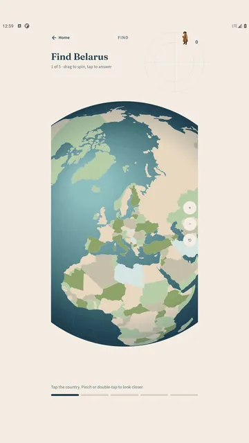

Meridian: A Quiet Atlas
A calm KS2 geography quiz. Name countries, flags and capitals on a globe.

Meridian is a calm, unhurried geography quiz. Quill, a small paper bird, keeps you company at the desk while you work your way around the world, one region at a time.
It is useful practice for KS2 geography: countries, flags, capitals and finding places on a map. The 11+ (eleven plus) does not usually include a geography paper, so this is general knowledge and map practice, not exam-paper prep.
Four ways to play: Globe (a country lights up — name it), Flags, Capitals, and Find (tap the right place on the map). Start in Europe and travel on through the world’s regions, earning stars and taking each Grand Tour. Beat the Clock, a daily round, a stamp book and souvenirs for Quill are there when you want them. There are 170 countries. No account and no sign-in. Your progress is saved on your device. The quiz works offline.
Contains ads that are suitable for children. A one-time purchase (£0.99) removes them, and a grown-up is asked to confirm before any purchase.




More from Whizzed